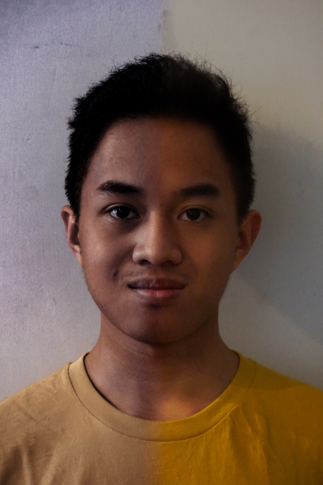

 Remaja ini baru berusia ((12*4/6)^2/8*34)/16 tahun dan masih belajar cara menulis dengan benar. Lahir dari rahim Ibu Pertiwi pada 16 April 2002 sebagai makhluk Tuhan yang memiliki pikiran. Dididik di Sekolah Islam Athirah selama kurang lebih 8 tahun lalu dipindahkan keluar kota dengan jarak tempuh kurang lebih 4 jam dengan mobil. Hari-hari selama 3 tahun di kota tersebut dihabiskan dengan bermain game dan menonton tanpa sedikitpun belajar di rumah. Entah bagaimana ia bisa lulus dengan nilai yang benar-benar anjlok. Dilanjutkanlah kisahnya dengan kembali ke kota asal untuk melanjut ‘pendidikan'nya ke sekolah berbasis international, yaitu Celebes Global School. Tidak hanya mendapat banyak pengalaman baru dan banyak belajar, ia juga berhasil untuk berhenti dari kebiasaan ‘buruk’nya, yaitu bermain game. Saat ini ia sedang berusaha untuk mencapai cita-citanya. Katanya ia ingin jadi dokter spesialis dalam bidang saraf. Ia lupa alasan kenapa ia ingin menjadi ahli dalam bidang saraf, tapi ia tau bahwa ia harus menggapai mimpinya. Katanya setelah berhasil menjadi dokter ahli saraf, ia ingin menjadi presiden. Ia juga kurang tau kenapa hal ini terpikirkan olehnya, mungkin karena baru saja salah satu inspirasinya telah bertemu dengan atasannya. “Kalau orang tuaku menjadikannya sebagai inspirasi dari namaku, aku harus bisa melampauinya!” pikirnya. Jadi katanya sebagai permbuka, ia akan memulainya dengan menjadi presiden negerinya.